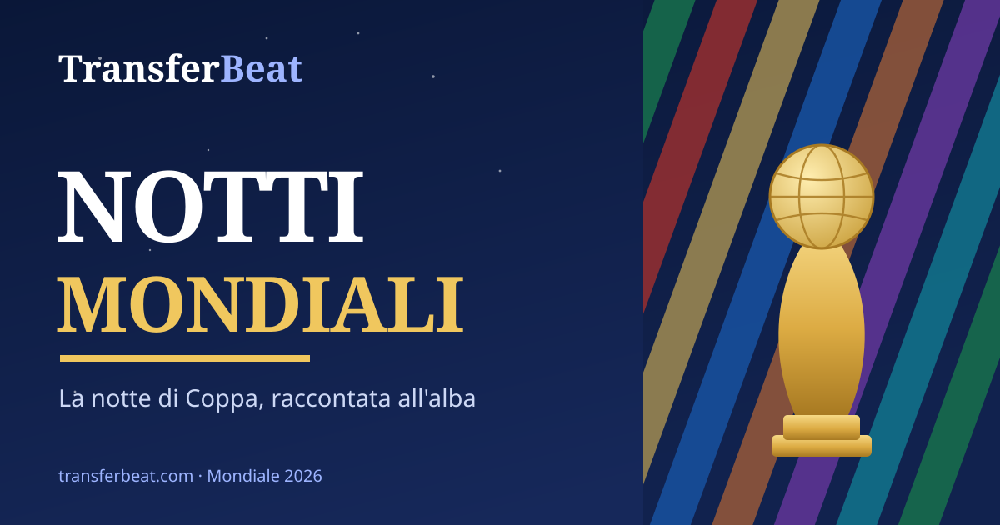

Noches Mundiales: Haaland tumba al Brasil de Ancelotti, Inglaterra asalta el Azteca con diez. Esta noche el derbi Portugal-Espana
Noche cruel para los grandes. En el MetLife un doblete de Erling Haaland elimina al Brasil de Ancelotti (1-2) y mete a Noruega en los primeros cuartos de su historia. En el Azteca, Inglaterra gana 3-2 a Mexico con un doblete relampago de Bellingham y resiste con diez tras la roja a Quansah. En cuartos sera Noruega-Inglaterra. Desde esta noche, hora italiana, turno para el derbi iberico Portugal-Espana y para Estados Unidos-Belgica.
Se empieza en el MetLife Stadium de Nueva Jersey, escenario del batacazo mas sonado del torneo. Brasil arranca fuerte y hasta se procura un penalti al 12', pero Bruno Guimaraes se deja hipnotizar por Orjan Nyland: penal fallado y partido que cambia de rumbo. En la segunda parte se hace gigante Erling Haaland: al 80' remata de cabeza en plancha el centro de Schjelderup para el 1-0, y al 90' se inventa un zurdazo desde la frontal que se cuela bajo las piernas de Danilo. En pleno descuento Neymar recorta de penalti (90'+7'), pero es tarde: termina 1-2. Noruega vuela a cuartos por primera vez en su historia; Brasil se despide en octavos como no le pasaba desde 1986. Con el doblete Haaland llega a siete goles e iguala en la cima de los goleadores a Mbappe y Messi.
El segundo acto de la noche es aun mas espectacular. En el Estadio Azteca, ante un publico al rojo vivo, Inglaterra tumba a Mexico con un doblete de Jude Bellingham en apenas dos minutos: cabezazo a la salida de un centro de Saka al 36' y remate comodo tras asistencia de Kane al 38'. Julian Quinones reabre el duelo al 42', pero al 54' los Tres Leones se quedan con diez por la roja directa a Jarell Quansah, castigado por el VAR por una entrada con los tacos sobre Gallardo. No alcanza: Harry Kane hace el tercero de penalti al 60' y, pese al penal de Raul Jimenez al 69', Inglaterra defiende con unas el 3-2, guiada por un Pickford inspiradisimo. Por primera vez Mexico pierde en casa en un Mundial.
El cuadro de cuartos toma forma: el sabado sera Noruega-Inglaterra, mientras que el jueves toca Francia-Marruecos. En Brasil ya es hora de balances: 'No creo que sea el final, sino el inicio de un nuevo ciclo', declaro Carlo Ancelotti, convencido de que su Seleccion 'merecio ganar'. En la otra orilla, el cuento escandinavo: Haaland arrastra a una Noruega nunca tan alto y se postula, junto a Mbappe y Messi aun en carrera, a la pelea por el trofeo de goleador.
Pero lo mejor es que los octavos no han terminado. Desde esta noche, hora italiana, el cuadro se completa. Se arranca a las 21:00 con el derbi iberico Portugal-Espana en Arlington, un choque que vale media Copa entre dos de las selecciones mas esperadas. A las 02:00 los coanfitriones Estados Unidos reciben a Belgica en Seattle, sin el sancionado Balogun. Y la ronda se cierra manana: el martes Argentina-Egipto a las 18:00, con Messi a la caza de goles pesados, y Suiza-Colombia a las 22:00.
Seguimos, noche a noche. Nos leemos manana al amanecer.
Lo más destacado
En Italia, los partidos completos están en RaiPlay.
Fuentes
- ESPNCerrado · 6 jul 2026
- ESPNCerrado · 6 jul 2026
- Al JazeeraCerrado · 6 jul 2026
TransferBeat agrega noticias de mercado citando las fuentes originales. Noticia en desarrollo.